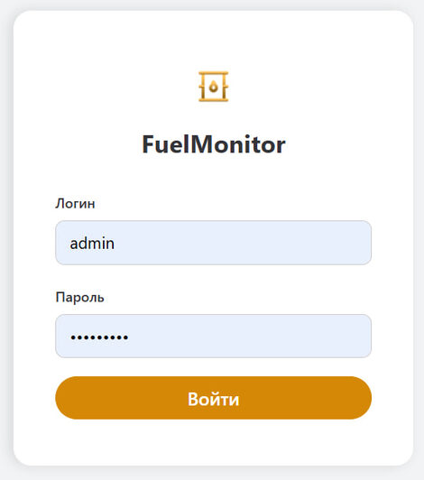

FuelMonitor – polttoaineen valvonta-alusta
Tuotetehtävistä teknisiin haasteisiin
Minkä luokan ongelmia tämä projekti ratkaisee
Monet liiketoiminnan tehtävät tiivistyvät yhteen vaikeaan kaavaan: on useita erillisiä järjestelmiä, joista jokainen tietää oman osansa totuudesta, eikä niitä osia ole missään koottu yhteen.
Data saapuu eri muodoissa, eri kanavien kautta, kirjoitusvirheineen ja aukkoineen – eikä yhteistä tunnistetta, jolla ne voisi yhdistää, yksinkertaisesti ole.
FuelMonitor on tyypillinen esimerkki. Kaksi erillistä kirjanpitojärjestelmää: toinen tietää, kuinka paljon resurssia luovutettiin, toinen – kuinka paljon todella päätyi vastaanottajalle. Niin kauan kuin ne ovat erillään, poikkeamaa ei voi todistaa. Toimme ne yhteen näkymään niin, että poikkeama näkyy automaattisesti jokaisesta tapahtumasta.
Tekniset haasteet ja miten ratkaisimme ne
-
01Entity resolution ilman yhteistä tunnistetta
Yhdistä kahden järjestelmän tietueet, joilla ei ole yhteistä avainta ja joiden data on "likaista" – kirjoitusvirheitä, eri näppäimistöasetteluja, duplikaatteja, tunniste haudattuna toisen kentän sisään. Ratkaisu on monivaiheinen algoritmi: tarkka osuma → sumea osuma (kirjoitusvirheet salliva) → todennäköisyyspohjainen palautus epäsuorista signaaleista. Järjestelmä ei hiljaa "niele" epävarmoja osumia – kiistanalaiset tapaukset menevät operaattorille yhden klikkauksen vahvistusta varten.
-
02Integraatiot, jotka huomioivat epätäydellisen todellisuuden
Kaksi eri kanavaa: reaaliaikainen tiedostonvaihto (useita formaatteja, automaattinen palautuminen häiriöistä) ja ulkoinen API tiukoilla rajoituksilla (pyyntöjen paloittelu, kiintiön seuranta, "ei dataa" ja "virhe" erottaminen). Jokaisella automaattikanavalla on manuaalinen varajärjestely häiriön varalta.
-
03Multi-tenancy taatulla eristyksellä
Yksi instanssi palvelee monia asiakkaita hierarkiassa "kumppani → asiakas". Eristys kulkee läpi koko järjestelmän arkkitehtuuritasolla – toisen dataa ei näe edes osoiteriviä muokkaamalla. Se varmistetaan erillisillä automaattitesteillä.
-
04Datan laadun valvonta osana tuotetta
Järjestelmä merkitsee epäilyttävät tietueet itse sääntöjen perusteella – operaattori käy läpi ongelmalistan sen sijaan, että tarkastaisi kaiken. Poikkeamat ja lähteiden väliset ristiriidat nostetaan esiin automaattisesti.
-
05Suorituskyky ja luotettavuus todellisilla volyymeilla
Eräajo nopeutti tuontia kymmenkertaisesti (kriittistä tuhansien tapahtumien päivävauhdissa). Raskaat uudelleenlaskennat ajetaan vain todellisten muutosten yhteydessä. Keskeiset vaiheet lokitetaan: häiriöitä selvitettäessä on aina selvää, missä ja mitä tapahtui.
Tulos
- Hajanaiset lähteet on koottu yhdeksi kuvaksi – poikkeamat näkyvät automaattisesti jokaisesta tapahtumasta.
- Yhdistäminen ilman yhteistä avainta toimii todellisella likaisella datalla, sisäänrakennetulla kiistanalaisten tapausten manuaalisella valvonnalla.
- Suorituskyky kestää todelliset volyymit; datan eristys on taattu arkkitehtuuritasolla.
- Yli 350 automaattitestiä (jäsentimet, algoritmit, käyttöoikeudet, eristys, päästä päähän -skenaariot), lokitus, valmius käyttöön live-palvelimella.
Miltä se näyttää



Mitä tämä tarkoittaa projektisi kannalta
FuelMonitor on yksi esimerkki siitä, minkä tasoista monimutkaisuutta otamme vastaan. Rakennamme verkkopalvelut ja alustat avaimet käteen – selkeistä tuotetehtävistä sellaisiin, joihin ei ole valmista ratkaisua ja arkkitehtuuri sekä algoritmit on suunniteltava alusta alkaen.
- Suunnittelemme arkkitehtuurin, joka kestää kasvun – useita asiakkaita, datan eristys, todelliset volyymit, luotettavuus.
- Kehitämme algoritmit tehtävään – yhdistäminen, pisteytys, aukkojen palautus siellä, missä valmiita kirjastoja ei ole.
- Viemme tuotantoon – testeineen, lokituksineen ja käytöllä live-palvelimella, ei "demoa, joka toimii puhtaalla datalla".
Jos sinulla on tehtävä – rutiinista sellaiseen, johon muut eivät tartu – jutellaan.